CGNS.NAV¶
The cg_look tool is a CGNS tree browser (formerly was CGNS.NAV).
There are three important views (or windows) you can open on a CGNS tree.
The control view is the manager for all the views on all the trees you
would open.
The tree view is the main window you can open on a single tree.
The VTK view displays the mesh, element sets, connectivities and boundary
conditions of your CGNS base.
Warning
The screenshots you have on these pages may be outdated. Most features are unchanged from GUI version to another GUI version, but as the update of all screenshots is long and tedious the actual GUI you would have on your screen may be more or less close to these docs… The best way to get help is to use the tools’ embedded doc, each window has its own help, use the button.
Control view¶
If you want to browse your CGNS file, just type:
cg_look
cg_look options
You can use several options to launch the CGNS.NAV program.
If you type CGNS.NAV -R file.cgns , the control view containing the file.cgns file is opened
and the tree view of the file is also opened. When the -R option is used, all the nodes of the tree
displayed in the tree view are expanded. If you don’t enter a file name after the -R option,
only the control view without loaded CGNS file appears. But when you choose your CGNS file,
you obtain a tree whose all the nodes are expanded in the tree view which is then opened.
If you type CGNS.NAV -l , you launch the control view and the tree view of the last used CGNS file.
In the tree view, the nodes are not expanded unlike the previous -R option. If you enter a file name after
the -l option, you open two additional views, namely the control view and the tree view of the loaded file.
You can use the -g option by entering CGNS.NAV -g file.cgns . The control view , the tree view and
the VTK view of the file.cgns file are displayed on the screen. In the tree view , the nodes of the tree aren’t expanded.
In the control view are listed the two views, namely the tree view and the VTK view . If you don’t type
a file name after the -g option, only the empty control view is opened. The two anothers views will be launched, when
you will select the CGNS filed to load in the control view.
After the program’s launching, the control view appears:
{kind=link}
This view helps you to find out the views you deal with and to which CGNS tree they correspond.
You have an example of several views listed in the control view below:
If you select the line of an existing view, this view will be raised on your screen. You can find
back the control view from any other view just by clicking the button located in the
bottom left-hand corner of the view.
Each time you open a view, the control view keeps track of it.
The columns of the lines which you see in this control view are:
| Column | Definition |
|---|---|
S |
Status flag, says if the tree has been modified and needs a save. |
T |
Type of view. The tree views are marked with 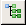,
the VTK view with , the form view with and the
queries view with . |
View |
The number of views which you opened. |
Dir |
The directory where you loaded the file. |
File |
The file name. |
Node |
Status flag, says if the entire tree is displayed / or if only a part
of the tree is visualized <partial>. |
If you click the button, this window appears:
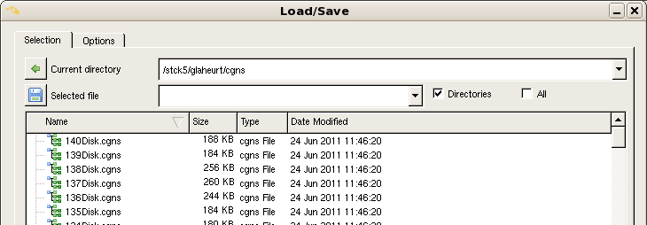Know, you must select an existing CGNS file by typing its directory’s path in the box located to the right of the 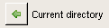 icon and by entering its name in the box located to the right of the 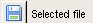 icon. You must click the button to valid your choice.
If you choose an unexisting file name, the following error message is returned to you:
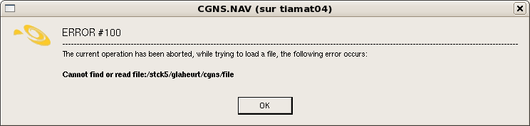The options of the Load/Save window are shown below:
To deal with a CGNS file
| Icon | Action |
|---|---|
| Load a new CGNS file. | |
| 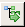 | Load the last used CGNS file. |
| 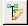 | Create a new CGNS file from scratch. |
| Open the CGNS/SIDS sub-trees database. | |
| 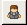 | Set the user defined options. |
| About. | |
| Close all the CGNS.NAV windows. |
You can also reload the last used CGNS file by clicking on the icon .
Tree view¶
When you open a new CGNS file or if you load again the last used CGNS file, the tree view appears:
{kind=link}
The tree view displays the nodes for the loaded CGNS file. It is the main view of the tree.
You can browse or perform modifications of the loaded CGNS tree in this view.
As you can observe it, there is only one entry in the tree view. This is the root of our CGNS file
which can contain one or several bases. All the nodes are arranged in a tree structure.
The opening of the CGNS tree occurs in a recursive way. A node is selected by clicking the mouse Button 1
on the wanted node. The path of the selected node is displayed in the box at the bottom of the window.
If you want to expand this node one level up in order to display the entries corresponding to the base
contained in the CGNSTree node, click the 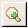 icon.
If you perform this operation again with the base1 node, you obtain the following tree view:
You can repeat the operation for the nodes of the different zones which are under the base1 node.
And so on…
In order to expand the tree view one level down, click the 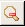 icon.
To expand all the loaded CGNS/tree, you must click 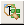.
You can see the expanded CGNS tree shown below:
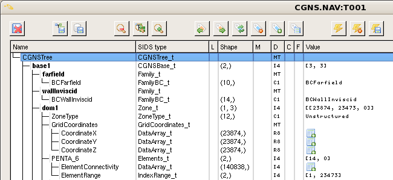If you want to open the child sub-tree of the selected node, you click on the icon located before any node. When you perform this operation, this icon disappears. You can collapse all the nodes below a node by clicking near to the name of the desired node at the place where was the icon.
When you use the icon, you expand all the nodes one level up while when you click on the icon, you expand only the wanted node one level up.
If you click on the icon, the form view of the selected node appears on the screen:
{kind=link}
As you can observe it, the node name, the node type, the node path, the node data, the node shape and the values
defined in the selected node are displayed in the form view . You can also resize the table by checking
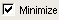 the case. The table’s dimensions are adjusted so that the column’s length is equal to the string’s length displayed,
like below:
You can open the queries view by clicking on the icon and this view appears:
Modify the CGNS tree
A mouse right button simple click on a selected node allows you to open the popup menu displayed below:
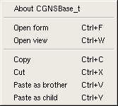This menu gives you access to some function such as Open a view and Copy , Cut , Paste a node.
These functions have keyboards shortcuts listed below.
Key bindings
Button Action Ctrl+FOpen the form. Ctrl+WOpen a new view of the tree. Ctrl+CCopy the selected node. Ctrl+XCut the selected node. Ctrl+VPaste the copied node as brother node of the selected node. Ctrl+YPaste the copied node as child node of the selected node.
The tree view allows to perform modifications in the CGNS trees. It supports the
Copy, Cut, Paste functions. You can copy a sub-tree of a view and paste it into
the same view or into another view which can belong to a different CGNS tree.
You press Ctrl + C on the selected node or you choose Copy in the popup menu opened
by a mouse right button simple click on the wanted node to copy it into a buffer.
You paste the copied node by pressing Ctrl + V or by selecting Paste as brother in the popup
menu. The new node becomes the brother node of the selected node. By contrast, if you select Paste as child
in the popup menu, the new node becomes the child node of the selected node.
In this example, the dom1 and dom2 nodes are copied and pasted into the same view. Here, their copies
are automatically named {Zone_t#002} and {Zone_t#001} . Indeed, these copied nodes have the same content as their
origin nodes.
You can modify these new nodes by a double left-click on their names, their types and their values.
Type then just the new name and the new value. You must select the new SIDS type from the drop-down list
opened by clicking in the entry field to change the node type, like below:
The Cut function acts as the Copy function with the difference that the selected node is removed from the tree view.
To deal with the CGNS tree
| Icon | Action |
|---|---|
| Expand the tree one level down. | |
| 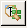 | Expand all the tree. |
| Expand the tree one level up. | |
| Select the previous marked node. | |
| Select the next marked node. | |
| 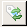 | Unselect the marked nodes and flag the unmarked nodes. |
| Unmark all the nodes. | |
| Mark all the nodes. | |
| 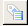 | Open the selected nodes list. |
| Open the queries window. | |
| Open the form view of the selected node. | |
Display the mesh of the tree in the VTK view. |
Mouse bindings
The mouse bindings and the corresponding actions are:
Button Action Button 1Select a node by a simple click on the wanted node. Button 1Expand/Collapse all the nodes below the selected node by clicking on the icon. Button 1Modify the name of the selected node, its SIDS typeor its value by a double-click on the desired column of the node.
The tree view allows you to choose all the elements which have the same SIDS type.
For example, if you want to select all the elements whose SIDS type is BC_t, select this
type in the drop-down list located in the bottom right-hand corner of the tree view and click the
icon in order to apply the selection.
The tree view allows you to browse all the marked nodes by using the icon to select the next marked
node and the icon to select the previous marked node.
Click the icon while to mark all the nodes, click the icon to unselect all the nodes.
You can also invert the selection by using the button. The marked nodes become unselected and vice versa for the unmarked nodes.
VTK view¶
To display the mesh, element sets, connectivities and boundary conditions contained in the CGNS file, click on .
and the mesh is dispayed in the VTK view:
{kind=link}
The view can be translated, rotated and scaled by using the mouse. The three axis x,y,z are displayed in the bottom left-hand corner of the window. The x-axis is coloured in red, the y-axis in yellow and the z-axis in green.
Mouse Bindings
The mouse bindings and the related actions are:
Button Action Button 1Rotate the camera around its focal point. Button 2Translate the elements displayed in the window. Button 3Adjust the view by holding down this button while moving the mouse in the display window. The objects are scaled up when the mouse moves from bottom to up and they are scaled down when the mouse moves from up to bottom.
To select an element of the CGNS/tree, you perform a pick operation by positioning the mouse
cursor on the place of your choice and by pressing on the p key.
{kind=link}
Key Bindings
The following keys and the corresponding actions are:
Key Action fFly to the picked point. pPerform a pick operation. rThe elements are centered and the camera moves along the current view direction so that all elements are visible in the window . sModify the representation of all elements so that they are surfaces. wModify the representation of all elements so that they are wireframes. dHide the current element selected by performing a pick operation. CtrlAdd the elements selected by a pick operation to the previous selection.
The pick operation shoots a ray into the 3D scene and returns information about the objects that
the ray hits. The first element hit by the ray is highlighted in red and a blue wireframe outlines
the bounding box of the selected object.In the top left-hand corner of the VTK view, the list of
the paths of elements hit by the ray appears. In our case, there is only one path because only one
object was hit by the shot ray. The path of the selected element also appears in the box.
In this example, the object’s path is dom1/PENTA_6{TRI}.
You can see that the paths of selected elements are marked by the icon while the unselected elements are marked by the icon .
Camera’s position
| Icon | Action |
|---|---|
| 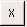 | Set the camera along the -X axis. |
| Set the camera along the -Y axis. | |
| 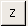 | Set the camera along the -Z axis. |
| 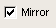 + | Set the camera along the +X, +Y or +Z axis if the mirror case is checked. |
|
Rotate about the X,Y or Z direction. |
If you want to set the viewing position to view the data along -Z axis, just click on . To display the view along the opposite direction, +Z axis, check and click on .
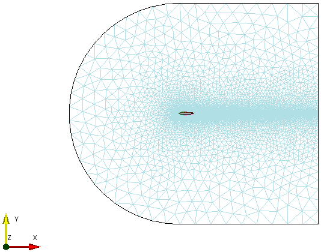 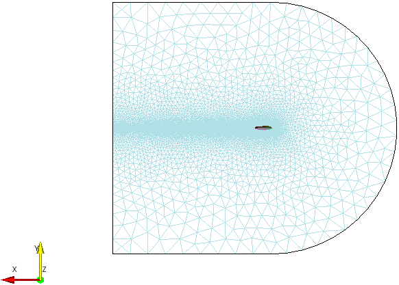{kind=link}
{kind=link}
To display the other elements of the CGNS file, you have to handle the view with the mouse.
By using the Button 1 of the mouse to rotate the view, the Button 2 to tranlate it and
the Button 3 with a motion of the mouse from bottom to up to scale up the elements, the view is
adjusted like that:
{kind=link}
and you perform a pick operation by pressing the p key:
{kind=link}
All the paths of the selected objects are displayed in the top left-hand corner of the window and
they are marked with the in the list below. As you can see, the current selected object
is the same as previously, namely dom1/PENTA_6{TRI} because it’s the closest object to the camera.
If a particular view interests you, you can save it and restore it later.
When a desired view is achieved, type a view’s name in the box 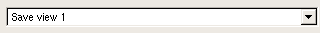 located at the top of the
window and press the Enter key or click the 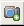 icon to save the view.
You can add a number of different views by repeating the previous operation.
Know, you want to have an overall view of the tree. To do that, press on the r key.
{kind=link}
When you pressed the r key, the size of the objects changed to fit in the VTK view, the objects
are centered while the camera keeps the current view direction.
To restore a saved view, choose the view’s name in the list, like below:
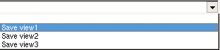To delete an unwanted view, select the view’s name and click the icon.
To save a view
| Icon | Action |
|---|---|
| Save the current view and add it to the view list. | |
| 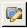 | Write the view list into a file. |
| Remove the current view from the view list. | |
| Type here the view’s name to save. |
You can change the colours randomly by clicking the icon and if you click the 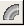 icon,
the VTK view switch between a black background and a white background, like below:
{kind=link}
When you changed the foreground of the VTK view, the current selected object remained selected
because it still appears outlined by the blue wireframe bounding box and it is highlighted in red.
It’s also the case when you change the colors of objects.
To change colours
| Icon | Action |
|---|---|
| Change the colours randomly. | |
| Switch between a black background and a white background. |
You can also modify the current selected object by using the icon and the icon.
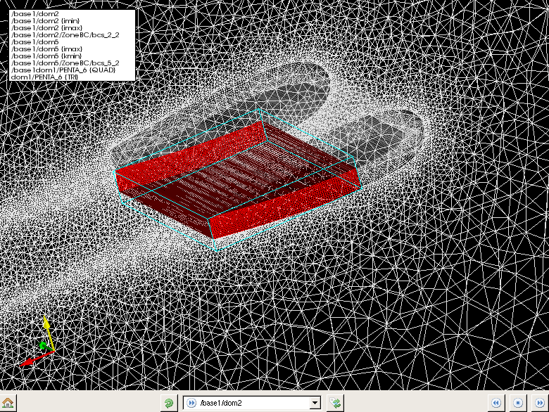{kind=link}
The current selected object is here /base1/dom2.
When you perform this operation, the next element or the previous element of the list which contains the objects picked becomes the current selected object. After the last element of the selection is reached, the first object of the list is again selected as current selected object.
To unselect all elements, click the icon.
To modify the selected object
| Icon | Action |
|---|---|
| Change the selected object by taking the following object in the selected objects list. | |
| Change the selected object by taking the previous object in the selected objects list. | |
| Set all elements as unselected objects and the hidden objects become visible. |
To see better a part of the view, you can remove visible elements of the tree. Once you performed
a pick operation to select objects, press the d key to hide the current selected element. After the objet
is hidden, the next element located in the selected objects list becomes the current selected element.
You can repeat the operation as long as list of the selected objects isn’t empty.
{kind=link}
As you can observe it, the hidden objects are marked with the icon.
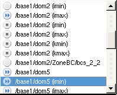If you click the button, you switch between the selected objects and the unselected objects. The hidden objects remain unchanged.
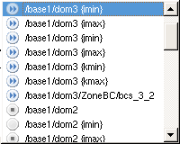When you click the icon, all elements become unselected and the objects which are hidden become again visible. Consequently, all elements of the list are marked with icon.
To display only a part of the CGNS tree
The CGNS/tree of our example displayed in the VTK view is composed of several zones, namely five zones.
You can choose to visualize only a part of the tree by marcking the nodes which you want to display.
Click on its name and press on the Space key to select a node.
As you can observe it, the selected node is marked with the flag.
Then, all you have to do is click the icon and the following VTK view appears:
{kind=link}
Only the dom2 zone is dispayed in the VTK view. You can add the other zones to be visualized by
performing the same operation. The zones which contain at least one marked node will be displayed.
Warning
There are a lot of screenshots in this CGNS.NAV doc, some may
be a bit out-dated but most of the look-and-feel of the tool would
keep unchanged.
Glossary¶
- cgns.org
- The official CGNS web site, by extension any document on this web site has an official taste…
- CGNS
- The specific purpose of the CFD General Notation System (CGNS) project is to provide a standard for recording and recovering computer data associated with the numerical solution of the equations of fluid dynamics. See also the How to?.
- CGNS/SIDS
- The Standard Interface Data Structure is the specification of the data model. This public document describes the syntax and the semantics of all tree-structured data required or proposed for a CFD simulation.
- CGNS/MLL
- The Mid-Level Library is an example implementation of CGNS/SIDS on top of CGNS/ADF and CGNS/HDF5 mappings. This library has a C and a Fortran API.
- CGNS/ADF
- The Advanced Data Format *CGNS/SIDS* implementation. A binary storage format and its companion library, developped by Boeing.
- CGNS/HDF5
- The Hierarchical Data Format *CGNS/SIDS* implementation. A binary storage format and its companion library (see below).
- CGNS/Python
- The Python programming language *CGNS/SIDS* implementation.
- CHLone
- A CGNS/HDF5 compliant implementation. The CHLone library is available on SourceForge.
- HDF5
- A powerful storage system for large data. The HDF5 library should be seen as a middleware system with a lot of powerful features related to efficient, portable and trustable storage mean.
- python
- An object oriented interpreted programming language.
- cython
- A compiler tool that translate Python/Numpy into C code for performance purpose.
- numpy
- The numerical library for Python. Numpy is used to store the data in Python arrays which have a direct memory mapping to actual C or Fortran memory.
- VTK
- A visualization toolkit used to display 3D objects ni CGNS.NAV.
- PySide
- The Python interface for the Qt toolkit. PySide
- Qt
- A powerful graphical toolkit available under GPL v3, LGPL v2 and a commercial license. The current use of Qt is under LGPL v2 in pyCGNS.